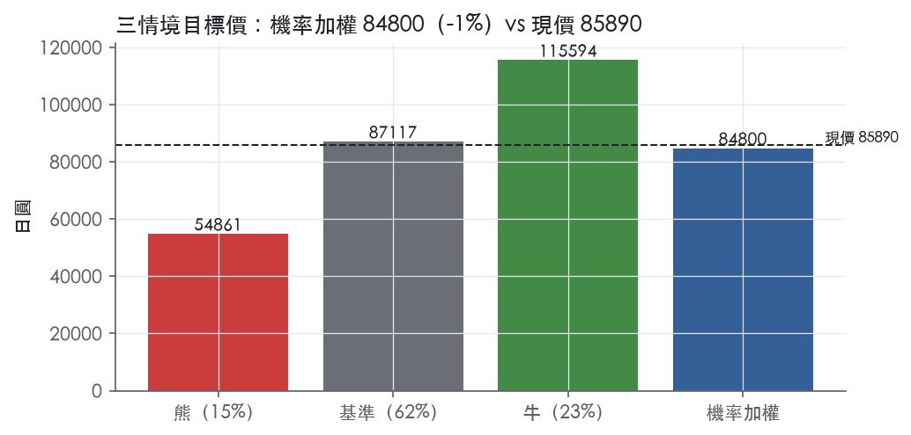
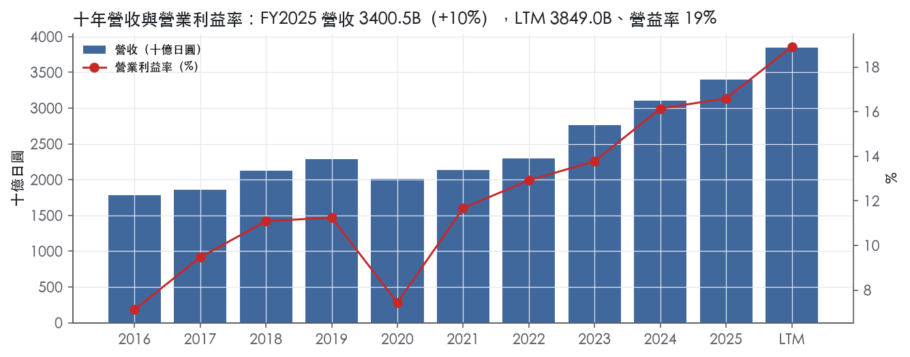
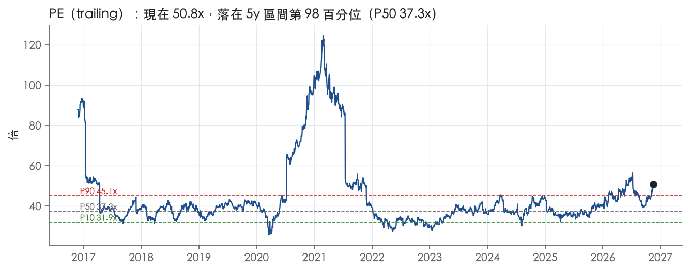
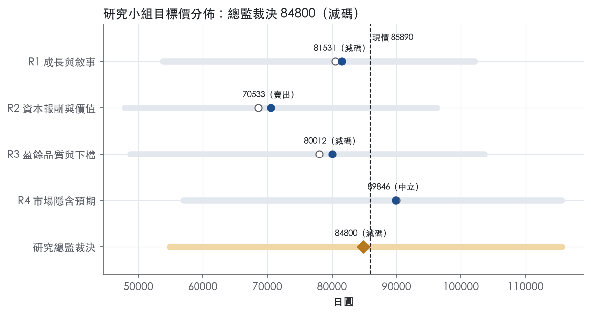
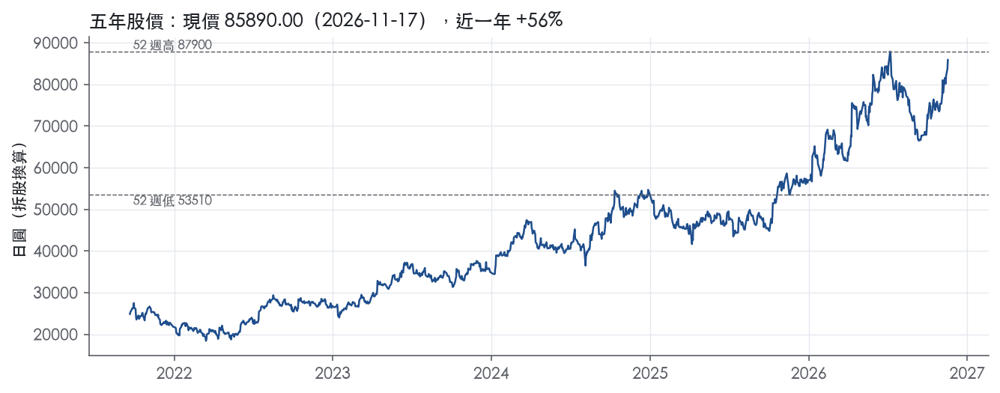

評等總表 › 未分類 › 9983.T
盈餘上修抵銷倍數收斂，中性｜評等 減碼｜目標價 84800
| 報告日 | 評等 | 目標價 | 當時股價 | 超額報酬 |
|---|---|---|---|---|
| 2026-11-17 | 減碼 | 84,800 | 85,890 | -8.1% |
| 評等 | 減碼 |
| 12 個月目標價 | 84800 日圓 |
| 現價 | 85890.00 日圓（2026-11-17） |
| 預期報酬 | 股價 -1.3%＋股息 1.0%＝總報酬 -0.3%；日股門檻 7.8%，超額 -8.1% |
| 估值方法 | P/E 41.0x，套在第 5–8 季的EPS（也就是一年後的未來四季） |
| 三情境 | 熊 54861／基準 87117／牛 115594 |
| 研究流程 | 四位研究員兩輪辯論＋研究總監裁決 |
| 資料來源 | EDINET、TDnet、J-Quants、Yahoo、FRED（全免費） |
盈餘上修抵銷倍數收斂，中性（研究總監裁決，四位研究員兩輪辯論後）
評等 減碼｜12 個月目標價 84800 日圓（總監三情境機率加權 88828 與研究員中位數 80772 各半）｜現價 85890.00（2026-11-17）
預期報酬：股價 -1.3%＋股息 1.0%＝總報酬 -0.3%。日股門檻 7.8%，超額 -8.1%。
估值方法：P/E 41.0x，套在第 5–8 季的EPS（也就是一年後的未來四季）。三情境：熊 54861（15%）／基準 87117（62%）／牛 115594（23%）。
立場中性而評等減碼：評等看的是「預期總報酬 -0.3% − 日股門檻 7.8%」＝超額 -8.1%，不是絕對漲跌；中性但超額偏離門檻，代表情境機率或股利把報酬推離門檻。
評等說明：研究總監自己的機率加權目標價 88828 日圓對應「中立」；與研究員第二輪中位數 80772 日圓各半後為 84800 日圓，落入「減碼」。兩者只差一級，請把這檔讀成「中立～減碼」，正文裡總監的立場文字以「中立」寫成。
什麼會讓研究總監改變看法：FY2026全年決算短信顯示FY2027計畫增收≥15%、想定匯率比153保守且FY2026 ROIC≥30%止穩，倍數上限放寬到44x轉偏多；FY2026Q4低基期下增收<12%或FY2027Q1營益率<19%，y1與倍數同步下修轉偏空。
| 過去四季（實際，FY2026Q3） | 未來四季 | 第 5–8 季 | 第 9–12 季 | |
|---|---|---|---|---|
| 營收（B） | 3,849.0B | 4,364.8B | 4,801.3B | 5,185.4B |
| 營收成長 | 14.8% | 13.4% | 10.0% | 8.0% |
| 營業利益率 | 18.9% | 19.5% | 19.5% | 19.3% |
| EPS（日圓） | 1692.37 | 1929.13 | 2124.81 | 2273.17 |
| EPS 成長 | 30.6% | 14.0% | 10.1% | 7.0% |
| 每股股息（日圓） | — | 0.00 | 0.00 | 0.00 |
| P/E（現價） | 50.8x | 44.5x | 40.4x | 37.8x |
| 股息殖利率（現價） | 1.0% | — | — | — |
過去四季為申報數字；預測為研究總監的假設、程式計算。倍數與殖利率都用現價計算，用來看現價對應各期獲利的高低。
| 情境 | 機率（歷史） | 故事 | 未來四季營收成長 | 第 5–8 季營益率 | 倍數 | 目標價 | 股價漲跌 |
|---|---|---|---|---|---|---|---|
| 熊 | 15%（14%） | 本行下行路徑全球停滯性衰退、日圓160僅部分緩衝；風險表第1條倍數回歸為主，第2條大中華區スクラップ＆ビルド拖延觸發有形固定資產與使用權資產減損為加碼，營益率退到17% | 7.0% | 17.0% | 33.0x | 54861 | -36.1% |
| 基準 | 62%（63%） | FY2026Q4低基期加速、FY2027各季利潤率持平於已實現水準，y2起成長降檔到10%、8%，倍數從98%分位收斂到前瞻帶P75上方 | 13.4% | 19.5% | 41.0x | 87117 | 1.4% |
| 牛 | 23%（23%） | 本行上行路徑：美國軟著陸、春鬪逾5%內需接棒，日圓145換算逆風下靠北美歐洲與國內量成長、大中華區回到成長、ROIC止穩，市場維持現行溢價 | 16.0% | 21.0% | 48.0x | 115594 | 34.6% |
目標價由程式依研究總監的驅動與倍數計算；機率由研究總監給定。括號內是歷史頻率：把這檔股票過去十年 12 個月報酬的波動形狀，置中在基準情境，結果落在各情境附近的比例。

四位研究員用不同方法各自估值，回應研究總監的質疑後交出第二輪，最後由總監逐點裁決。各研究員的主張見第七章，裁決理由見第八章，完整論證見《研究底稿》。
| 立場（一輪→二輪） | 加權目標價（一輪→二輪） | 評等（一輪→二輪） | 第二輪倍數 | 熊～牛目標價 | |
|---|---|---|---|---|---|
| R1 成長與敘事 | 中性→看空 | 80490→81531 | 減碼→減碼 | 43.0x | 53767～102151 |
| R2 資本報酬與價值 | 看空→看空 | 68617→70533 | 賣出→賣出 | 35.0x | 47922～96273 |
| R3 盈餘品質與下檔 | 看空→看空 | 78021→80012 | 賣出→減碼 | 40.0x | 48727～103585 |
| R4 市場隱含預期 | 中性→中性 | 90024→89846 | 中立→中立 | 41.0x | 56915～115594 |
| 研究總監裁決 | 中性 | 84800 | 減碼 | 41.0x | 54861～115594 |
目標價由程式依各自的驅動與倍數計算；評等＝機率加權總報酬 − 日股門檻。
Fast Retailing是一家以「ユニクロ」為核心品牌、靠全球化門市網絡與自有企劃製造銷售（SPA）模式賣休閒服飾給全球大眾消費者的集團。公司由株式会社ファーストリテイリング（持股公司）、68家合併子公司及4家權益法適用公司構成。集團企業理念為「服を変え、常識を変え、世界を変えていく」，產品概念稱為LifeWear（究極の普段着），目標是提供生活所需、簡約且優質、不浪費資源的服飾。公司將FY2023定位為「第四次創業」的起點，目標是將營收收益擴大到10,000B日圓的規模【判，數字源自公司揭露之「10,000.0B」目標換算】，中期則以FY2028達成5,000B日圓營收為目標【判，數字源自公司揭露之「5,000.0B」目標換算】。公司自估歐美成衣市場規模約120,000B日圓，目前市占率不到1%，東南亞・印度・澳洲及大中華區市占率也僅數個百分點以下，若LifeWear理念能滲透全球、成為生活必需品牌，市占率有機會達到超過10%。LTM（至FY2026Q3）營收3,849.01B日圓、EBITDA 951.61B日圓，過去十年營收從FY2016的1,786.47B日圓成長到FY2025的3,400.54B日圓，複合成長動能主要靠海外ユニクロ事業擴張。
集團依報告分部分為國內ユニクロ事業、海外ユニクロ事業、ジーユー事業、グローバルブランド事業與其他。ユニクロ事業是「ユニクロ」品牌於國內外的休閒服飾銷售事業；ジーユー事業是「ジーユー」品牌於國內外的休閒服飾銷售事業；グローバルブランド事業則涵蓋服飾企劃、銷售及製造等業務，旗下包含Theory、PLST等品牌；「其他」區分主要是不動產租賃業等。設備投資方面，FY2025全年資本支出合計171.9B日圓，較前期增加59.7B日圓，其中國內ユニクロ事業15.1B日圓、海外ユニクロ事業120.0B日圓、ジーユー事業7.7B日圓、グローバルブランド事業1.4B日圓、系統及其他27.4B日圓——海外ユニクロ事業占全年資本支出約七成，顯示擴張重心清楚放在海外門市與自動化倉庫。展店數量上，FY2025國內ユニクロ新開31間直營店；海外ユニクロ在大中華區新開44間、韓國14間、新加坡1間、馬來西亞7間、泰國3間、菲律賓4間、印尼7間、澳洲2間、越南4間、印度4間、美國15間、加拿大8間、英國2間、西班牙1間、荷蘭3間、丹麥1間、義大利1間、波蘭1間；ジーユー事業新開39間；グローバルブランド事業新開46間。10-K未揭露各分部占營收與營益率的精確百分比拆分，但從主要合併子公司損益可見規模感：株式会社ユニクロ（國內ユニクロ事業主體）FY2025銷售收益1,026.10B（折合1,026.10B日圓）、稅前利益250.75B（折合250.75B日圓）；迅銷（中國）商貿有限公司（海外ユニクロ事業中國區主體）銷售收益459.02B（折合459.02B日圓）、稅前利益66.68B（折合66.68B日圓），兩者銷售收益占集團合併營收均超過10%。年度毛利率長期維持在近50%上下，FY2025為53.8%，營益率則從FY2020的7.4%回升到FY2025的16.6%，反映SPA模式規模效益與庫存管理改善。
客戶是全球大眾市場的休閒服飾消費者，通路涵蓋直營實體門市與電商，公司明確將「店舗とEコマースの質的進化」列為重點課題，強調旗艦店、大型店與電商體驗一體化。地區布局以日本本土ユニクロ事業為基本盤，海外ユニクロ事業橫跨大中華區、韓國、東南亞（新加坡、馬來西亞、泰國、菲律賓、印尼、越南）、印度、澳洲、北美（美國、加拿大）及歐洲（英國、西班牙、荷蘭、丹麥、義大利、波蘭、法國）。公司在經營方針中將地區策略拆得很細：日本、韓國、東南亞・印度・澳洲地區、北美、歐洲的ユニクロ事業於FY2025均達成兩位數大幅增收增益，使全球穩健獲利的體系更加鞏固；北美、歐洲靠既有門店與電商成長並持續展旗艦店與大型店追求高成長；東南亞・印度・澳洲地區在維持銷售成長同時建構未來加速成長的事業基礎；大中華區則推進門店汰舊換新（スクラップ＆ビルド）、品牌重塑與個店經營強化，力圖回到成長軌道，暗示該地區近期表現相對承壓。國內ユニクロ事業策略定調為「安定成長」，透過門店大型化・媒體化、個店經營強化、折扣率改善、生產力提升來維持量利雙升。10-K未揭露按地區拆分的營收或營益占比數字，僅能從質化敘述判斷北美、歐洲、日韓為當前增長最快、大中華區為結構調整中的區域。
最近四季（FY2026Q1至Q3，加上FY2025Q4）顯示集團從FY2025下半年的增速放緩，轉為FY2026上半年起加速增長並大幅擴張利潤率。FY2025Q4（截至2025-08-31）營收783.83B日圓、年增6.3%、營益率14.5%，為全年四季中成長最慢、利潤率最低的一季。FY2026Q1（截至2025-11-30）營收大幅回升至1,027.74B日圓，年增14.8%，營益率跳升至20.5%，淨利147.44B日圓，顯示冬季商品銷售表現強勁。FY2026Q2（截至2026-02-28）營收持平於1,027.48B日圓、年增14.8%，但營益率略降至18.5%，淨利131.84B日圓。FY2026Q3（截至2026-05-31）營收加速至1,009.96B日圓、年增22.2%，是四季中成長最快的一季，營益率回升至21.2%，淨利146.79B日圓。現金部位從FY2025Q4的893.24B日圓增加到FY2026Q3的1,132.08B日圓，總債務同期則從210.00B日圓降為零，資產負債表持續去槓桿、淨現金地位更穩固。由於未取得最近一期決算短信，無法引用公司最新全年計畫（業績予想）原文與次季指引，僅能依資料包數字推估趨勢。
公司自己列出的對處すべき課題（成長引擎）共六項：第一是經營人才的培育，透過完全實力主義評價、常態化的拔擢與降格、經營者自身育成，打造少數精鋭組織；第二是追求事業發展與永續性並存的商業模式，在生產、運輸、銷售全流程保護環境與人權，並透過二手再利用、回收建立循環式生意，為此設定FY2030的温室氣體削減、可追溯性、回收再利用、多元化等目標；第三是以顧客為起點強化商品開發、進化「個店經営」、推動店舗與電商質的進化；第四是全球化收益支柱的多元化，具體包括加速海外ユニクロ事業成長（北美・歐洲靠既有店＋電商並展旗艦店大型店、東南亞・印度・澳洲建構成長基礎、大中華區推動結構改革回歸成長軌道）、國內ユニクロ事業維持穩健成長、以及向「全球視角經營」轉型，強化全球總部在商品、賣場、電商、行銷、物流上的職能；第五是集團品牌的擴大，ジーユー事業要收斂品項數、提升單品完成度、強化銷售計畫驅動各部門聯動；グローバルブランド事業則要運用ユニクロ培養的商売原理與資訊製造零售基礎，在各國確立品牌定位；第六是對應通膨時代的費用結構改革，積極投資人才、IT、店舗、倉庫與品牌建設的同時徹底活用既投資資產、提升生產力與附加價值，並改善採購流程以提高費用效率。
從資料面看，集團過去十年毛利率穩定在近50%至54%區間、營益率從個位數爬升到FY2025的16.6%，顯示規模化與門店大型化策略確實兌現到利潤率上，但目前trailing P/E 50.8x、EV/EBITDA 26.5x均處於近5年高位分位（98%上下），市場已給予相當高的成長溢價，後續股價表現高度依賴海外ユニクロ事業（特別是北美、歐洲）能否持續兩位數增長，以及大中華區結構改革能否兌現「回歸成長軌道」的說法。公司「第四次創業、目標10,000B日圓營收」的敘事本質上是靠併入更多地區、更多品牌堆出規模，執行風險集中在大中華區展店策略調整與新興市場（東南亞、印度）人才與營運基礎建設能否跟上擴張速度。政策保有股方面，公司明確採取原則不持有政策保有股、僅做最小必要持股的方針，且FY2025帳上非上市股票僅0.00B，在東證要求改善資本效率與處分交叉持股的背景下，公司在這一項上幾乎沒有進一步處分空間可做為股東回報催化劑，資本回報的主要來源仍須看淨現金部位（FY2026Q3已達1,132.08B日圓）未來是否轉為更積極的庫藏股買回。

Fast Retailing 的護城河評為「寬」，來源是ユニクロ／LifeWear 品牌，以及全球規模的情報製造小売業（SPA）成本優勢，趨勢穩定。我們有把握未來 10 年以上 ROIC 仍高於資本成本，理由是即使在最差的一年，ROIC 29.6% 仍遠高於 10.2% 的資本成本代理值。最大的保留是 ROIC 從高點一路下滑，而且只有 7 年資料，下文照實交代。
無形資產（品牌）：公司表示 LifeWear 的概念獨一無二，FY2025 日本、韓國、東南亞・印度・澳洲、北美、歐洲的ユニクロ事業都達成兩位數的大幅增收增益。公司運用 App 會員基盤與門市網收集、分析顧客意見，再用於商品開發。LifeWear 賣的是生活基本款，不是流行款，定價力不必靠追逐潮流維持，這是我們給「寬」的核心理由。
成本優勢（規模與 SPA 體系）：公司持續投資自動化倉庫，以建立全球的事業基盤。グローバルブランド事業的方針，是運用ユニクロ培養的商売原理原則與情報製造小売業基盤。株式会社ユニクロ FY2025 銷售收益 1,026,096M 日圓、稅前利益 250,751M 日圓。單一國家的子公司就有這個量體，背後的採購量、單品深度與物流密度，是區域型品牌或新進者難以複製的。
大部分看得到，但 ROIC 的走勢不符合寬護城河對「穩定」的要求。ROIC 有資料的 7 年全數高於資本成本，十年平均 39.1%，平均減資本成本 29.0%。毛利率十年平均 51.1%，標準差只有 2.0%，最低 48.6%，這是品牌定價力最直接的證據。營業利益率最新值 16.6%，正是十年最高，顯示規模效益仍在擴大，沒有消退。
衝突在 ROIC：標準差 9.8%，從最高 53.0% 降到最新 30.0%，已經貼近十年最低的 29.6%。同一期間利潤率創新高，所以我們判斷 ROIC 下滑主要來自投入資本擴張（海外展店、倉庫、IT），而不是獲利能力退化。資本支出占營收的比重由 FY2018 的 2.3% 升到 FY2025 的 4.8%，和這個判斷一致。
我們仍維持「寬」，原因有兩點。第一，ROIC 與資本成本之間的緩衝夠大，連營收衰退 12.3% 的年份（量化底稿營收成長最低值）都沒有失守。第二，10.2% 的代理值是以美國 10 年債計算，日本 10 年債只有 2.841%，對日圓計價的公司而言偏保守。下修條件很明確：ROIC 跌破 29.6%，同時毛利率回落到 48.6% 以下，代表品牌與規模同時鬆動，屆時下修為「窄」。
最大的侵蝕風險是大中華區與資本密集度上升，品牌本身短期內難以被打穿。大中華區方面，公司自己說要推動門市スクラップ＆ビルド、品牌重塑與個店經營強化，目標是回到成長軌道。中國若從成長引擎變成結構性拖累，會直接拉低集團 ROIC。
資本密集度方面，公司把持續開設旗艦店、大型店列為北美與歐洲的成長手段。大店的單店回報若不如預期，ROIC 的下滑趨勢會延續下去。此外，超低價跨境電商在基本款上的價格競爭，會考驗品牌溢價的上限。
人才與接班也是長期風險。公司把經營人才的獲得與培育列為第一項重點課題。柳井正持股比率 17.40%，創辦人主導的決策文化能否制度化，是十年期的變數。
最後是匯率。日圓兌日圓 159.93墊高了海外獲利的換算值，日圓回升時帳面利潤率會打折，但這不改變護城河本身。
目標倍數相對國際成衣零售同業應給溢價，理由是 ROIC 對資本成本的緩衝寬、毛利率極穩定，溢價可假設維持 10 年以上才開始收斂。不過現價 P/E 已高於自身 5 年 P90 的 45.1x，溢價的錨應放在 5 年中位數 37.3x附近，而不是現價。ROIC 下滑止穩之前，不宜給超過 5 年 P90 的目標倍數。
| 指標 | 最新 | 十年平均 | 標準差 | 最低 | 最高 |
|---|---|---|---|---|---|
| ROIC | 30.0% | 39.1% | 9.8% | 29.6% | 53.0% |
| 毛利率 | 53.8% | 51.1% | 2.0% | 48.6% | 53.9% |
| 營業利益率 | 16.6% | 11.7% | 3.1% | 7.1% | 16.6% |
| FCF 利潤率 | 12.3% | 12.6% | 3.6% | 6.0% | 17.6% |
| ROE | 20.2% | 17.7% | 3.1% | 9.5% | 20.4% |
程式計算。資本成本代理值（10 年債＋5%）：10.2%；ROIC 平均減資本成本：29.0%；ROIC 有資料的 7 年中，高於資本成本 7 年。
LTM 營業現金流／淨利 1.55x、自由現金流／淨利 1.31x，十年平均亦同樣≥1x，顯示盈餘有穩定現金支撐（量化底稿：盈餘品質計分表）。計分表七項指標中六項是綠燈，僅股數稀釋與股東回饋兩項是黃燈，且都可用公司財務政策解釋，不構成盈餘灌水的證據。
現金持續跑在淨利前面，不是靠應計堆出來的帳面數字。FY2025 營業活動CF為580.6B円，較前期651.5B円減少，主因稅前利益650.5B円、折舊及其他攤銷費用216.4B円等資金增加項，加上法人稅等支付202.2B円等資金減少項。量化底稿顯示LTM營業現金流／淨利1.55x、FCF／淨利1.31x，近三年平均與十年平均方向一致（1.55x／1.23x與1.85x／1.44x）【判，量化底稿】。應計比率（(淨利−CFO)／平均總資產）LTM為-6.5%，十年平均-6.3%，持續為負，代表現金流入長期領先申報淨利，是加分項而非紅旗。FY2025投資活動CF使用578.9B円（前年同期82.2B円），主因定期存款淨增209.6B円、有形固定資產購置135.5B円、投資有價證券淨支付185.0B円；這屬於現金管理與投資配置，不影響盈餘品質判斷。
本次沒有取得決算短信，無法核對非GAAP調整項，以下僅依有報原文列出「事業利益」與法定「營業利益」的落差。FY2025事業利益（營收減銷貨成本與銷管費）為551.1B円（同比+13.6%），但國內UNIQLO事業的法定營業利益因店鋪減損損失迴轉利益而達184.4B円（同比+18.4%），高於事業利益181.3B円（同比+17.5%）的增幅，差距來自一次性迴轉而非核心獲利改善。全球品牌事業營業利益轉為虧損0.9B円（前期盈餘0.6B円），主因Comptoir des Cotonniers認列事業結構改革相關減損損失等3.9B円。金融收益・費用合計正86.3B円，其中利息淨額正52.4B円、外幣資產換算匯兌利益33.8B円。整體而言，稅前利益650.5B円與母公司所有者歸屬淨利433.0B円的成長（+16.8%／+16.4%）有一部分是來自匯兌利得與一次性減損迴轉的助力，核心事業利益成長13.6%更能代表真實經營動能。
槓桿極低、幾乎是淨現金狀態，利息保障能力也沒有壓力。淨負債／EBITDA LTM為-1.19x，近三年平均-1.13x，十年平均-1.63x，全部為負值，代表公司長期處於淨現金狀態。利息保障倍數LTM為53.5x，近三年平均42.7x，十年平均44.5x，遠高於8x的綠燈門檻。公司財務戰略明確以「強固な財務体質を維持しながら…毎期一定程度の株主還元を維持しつつ、成長投資資金と手許流動性も確保」為原則。FY2025財務活動CF使用339.1B円（前年同期269.0B円），主因公司債償還30.0B円、股利支付142.6B円、租賃負債償還140.4B円。信用評等方面，公司取得S&P「A+（穩定）」與JCR「AA+（穩定）」評等，且本期「追加の外部調達を行うことなく、十分な手許流動性を確保できています」，佐證淨現金狀態非一次性而是結構性。
計分表沒有任何紅燈，只有兩項黃燈，以下逐條回應。
應以「事業利益」（核心法定營業利益口徑之前的本業利益）為估值錨點，而非稅前利益或淨利，因為FY2025淨利成長16.4%中有一部分來自匯兌利得33.8B円與一次性減損迴轉，波動性高不具持續性。現金轉換長期≥1x、淨負債持續為負、利息保障超過50x，槳桿完全不構成壓抑倍數的理由，目前trailing P/E 50.8x、EV/EBITDA 26.5x處於5年及10年高分位（分位98%）主要反映市場對海外UNIQLO成長性的溢價，而非盈餘品質的風險折價。整體盈餘品質判定為「高」，估值研究員不需要對GAAP盈餘做額外保守性折扣，但應把一次性減損迴轉與匯兌利得從「可持續盈餘」基礎中剔除以得到更乾淨的成長率假設。
| 項目 | LTM | 近三年 | 十年 | 燈號 | 規則 |
|---|---|---|---|---|---|
| 營業現金流／淨利 | 1.55x | 1.55x | 1.85x | 綠 | ≥1.00x 綠、<0.80x 紅 |
| 自由現金流／淨利 | 1.31x | 1.23x | 1.44x | 綠 | ≥0.90x 綠、<0.60x 紅 |
| 應計比率（(淨利−CFO)／平均總資產） | -6.5% | -5.7% | -6.3% | 綠 | ≤0.0% 綠、>5.0% 紅 |
| SBC／營收 | — | — | — | — | ≤3.0% 綠、>8.0% 紅 |
| 淨負債／EBITDA | -1.19x | -1.13x | -1.63x | 綠 | ≤1.50x 綠、>3.00x 紅 |
| 利息保障倍數（營業利益／利息） | 53.5x | 42.7x | 44.5x | 綠 | ≥8.00x 綠、<3.00x 紅 |
| 稀釋股數年變動 | 0.0% | 0.0% | 0.0% | 黃 | ≤0.0% 綠、>3.0% 紅 |
| （股利＋回購）／淨利 | 29.5% | 28.5% | 30.4% | 黃 | ≥50.0% 綠、<0.0% 紅 |
程式計算；燈號以 LTM（無則近三年平均）判定。
| 風險 | 觸發指標（看什麼數字、在哪裡看） | 對 EPS 的影響方向與粗略幅度 | 未來 12 個月發生機率 | 出處 |
|---|---|---|---|---|
| 估值／倍數回歸：trailing P/E 50.8x 處5年98%分位，一旦成長不如預期，倍數壓縮幅度可能大於盈餘衰退 | 季度決算短信公布之全年營益計畫是否下修；P/E、EV/EBITDA 分位是否持續貼近5年高位 | 方向：負向，幅度：大（倍數面而非盈餘面） | 中 | 研究判斷 |
| 大中華區展店結構改革（スクラップ＆ビルド）執行不如預期，拖累海外ユニクロ事業增速 | 決算短信按地區揭露的大中華區同店／展店數字（目前10-K未拆分地區營收，需看後續短信） | 方向：負向，幅度：中（海外ユニクロ是FY2025資本支出約七成，120.0B日圓，占比最大） | 中 | |
| 原材料（棉花、喀什米爾、羽絨）調達困難或價格高漲，衝擊毛利率 | 毛利率季度變化（dv.gross_margin，目前FY2025為53.8%）；原物料行情 | 方向：負向，幅度：中 | 中 | |
| 匯率風險：各國結算貨幣對日圓急劇變動，影響採購成本與金融資產評價損益 | USDJPY 即期匯率（159.93）相對公司採購避險假設匯率的偏離幅度；公司未揭露具體避險比率 | 方向：雙向，幅度：中 | 中 | |
| 資訊安全／顧客個資外洩或系統遭勒索軟體攻擊，導致營運中斷與GDPR等罰款 | 是否發生重大資安事件公告；GDPR裁罰公告 | 方向：負向，幅度：中至大 | 低 |
估值回歸風險最值得盯，因為它不需要基本面真的變差，只要成長速度從「超預期」降到「符合預期」就會發生。 公司trailing P/E 50.8x位於近5年98%分位、EV/EBITDA 26.5x位於98.1%分位、EV/Sales 6.6x位於98.5%分位，三個倍數同時貼頂。FY2026Q1至Q3營益率分別達20.5%、18.5%、21.2%，遠高於FY2025Q4的14.5%（FY2026Q2、FY2026Q3、FY2025Q4），市場已經把「加速再加速」的軌跡外推到估值裡；只要下一季營益率回落到FY2025全年16.6%的常態水準，股價承受的倍數壓縮風險遠高於盈餘本身的下修幅度。
大中華區結構改革是公司自己點名、但沒給具體財務數字的執行風險。 公司在經營方針中明確寫大中華區要「推進門店汰舊換新（スクラップ＆ビルド）、品牌重塑與個店經營強化，力圖回到成長軌道」，這段措辭本身暗示該地區近期表現相對承壓，否則不需要「力圖回到成長軌道」這種用語。而海外ユニクロ事業FY2025資本支出120.0B日圓，占集團全年資本支出171.9B日圓的約七成，意味著這塊地區改革失敗的機會成本不只是營收損失，還牽涉已投入的實體資產是否會走向減損——公司在風險項目中也單獨列了「減損リスク」，提到「事業環境の変化等により収益性が低下した場合、有形固定資産および使用権資産などについて減損損失を計上する可能性があります」。這兩段放在一起看，大中華區展店策略若持續不順，下一步就是店舗減損，直接吃掉營益率。
原材料調達與價格波動是SPA模式的結構性弱點，公司自己承認可能影響供應與業績。 10-K原文寫明「災害・気候変動その他の理由により、当社グループ各事業で販売する商品に使用する原材料（綿花やカシミヤ、ダウンなど）の十分な調達が困難になり、また価格が高騰する可能性があります」。公司過去十年毛利率維持在近50%至54%區間、FY2025為53.8%，這個水準本身已經反映規模化採購的議價力，但若主要原料（棉花、羊絨、羽絨）同時出現供給緊張，毛利率率先受傷，而公司在對策欄只寫「地域分散化」與「代替素材開發」這類中長期手段，短期內沒有立即對沖工具。
匯率風險是出口／海外採購業者的老問題，公司有做遠期避險但未揭露避險比率的具體數字。 原文寫「為替環境の激変緩和を目的として、各国・地域事業において、想定仕入見込み額に基づく先物為替予約を実行しています」，並說明避險比率、期間由取締役會討論決定，但沒有公開具體避險比率或假設匯率水準，無法比對現行USDJPY 159.93是否偏離假設。此外公司持有多元貨幣金融資產，日圓波動也會直接影響金融損益，這是雙向風險而非單純的「日圓貶值有利」敘事。
資訊安全風險機率較低但一旦發生衝擊面廣。 公司列出GDPR等跨境個資法規罰款風險與勒索軟體導致系統停機的風險，並寫「業務継続が困難となる可能性があります」，但原文未給出具體財務衝擊估算，只能定性判斷。
淨現金部位持續擴大（FY2026Q3已達1,132.08B日圓，總債務降至零）卻沒有相應的庫藏股買回或配息政策揭露，資本配置效率可能成為東證PBR改善要求下的壓力點。公司在政策保有股處分上幾乎無空間可做（FY2025非上市股票僅0.00B，約0.002B日圓），若淨現金持續堆積卻不轉化為股東回報，市場可能質疑資本效率，進而壓低倍數，這點10-K風險章完全沒提到。
公司尚未取得的最新決算短信全年計畫（業績予想）缺口，使我們無法驗證FY2026Q1-Q3的加速增長是否已被公司自己上修的全年指引充分反映，存在「市場已經提前計入樂觀指引、公司卻尚未正式上修」的預期落差風險。這屬於監測空窗期風險，而非10-K列出的經營風險，但直接影響近期股價對任何一次決算短信的反應幅度。
現價 85890.00 對應 trailing（過去四季）P/E 50.8x、EV/EBITDA 26.5x、EV/EBITA 34.7x、EV/Sales 6.6x、FCF 殖利率 2.6%。主要估值倍數 P/E 現在 50.8x，落在5 年區間第 98 百分位（P10／P50／P90 = 31.9x／37.3x／45.1x）。

把程式的機械基準預測放到現價下，市場付的前瞻倍數是：P/E（未來四季） 46.6x、P/E（第 5–8 季） 42.7x。反推 DCF 顯示市價隱含未來五年營收年成長 18.5%（WACC 9.0%、終值成長 3.0%、FCF 利潤率 16.0%，SBC 不加回）。
| 倍數 | 現在 | 5 年 P10 | 5 年 P50 | 5 年 P90 | 現在分位 | 全期 P50 |
|---|---|---|---|---|---|---|
| P/E | 50.8x | 31.9x | 37.3x | 45.1x | 98.0% | 38.9x |
| EV/EBITDA | 26.5x | 13.9x | 18.5x | 23.2x | 98.1% | 18.8x |
| EV/EBITA | 34.7x | — | — | — | — | 25.7x |
| EV/EBIT | 34.7x | 23.1x | 27.4x | 31.8x | 97.3% | 27.3x |
| EV/Sales | 6.6x | 2.8x | 4.0x | 5.6x | 98.5% | 3.7x |
| P/S | 6.9x | 3.2x | 4.3x | 5.9x | 98.6% | 3.6x |
| P/FCF | 38.6x | 23.4x | 28.7x | 37.4x | 93.2% | 29.1x |
trailing 倍數（股價 ÷ 過去四季）；分位以每個交易日計算。
（日股同業籃尚未建置：評等門檻用日股絕對門檻＝日本 10 年公債＋股權風險溢酬 5%，見首頁。）
事後實現前瞻倍數帶（P/E，2018-07-17..2025-07-15）：P10／P50／P90 = 25.7x／31.8x／68.8x。它是每個交易日的股價除以之後四季實際實現的指標；一年後，今天的第 5–8 季正是那時的未來四季，所以這條帶是 12 個月目標價的同口徑倍數。因為用的是事後實際而非當時預期，過去成長超乎預期的公司這條帶會偏低。
程式的機械基準（成長率從過去四季年增率三年收斂到 6%、利潤率持平）用 事後實現前瞻 P/E P50 估值得到 63947（-25.5%），市場現行前瞻倍數（現價 ÷ 基準 未來四季指標）一年後持平，套在基準 第 5–8 季指標得到 93666。這兩個數字只是參考點，不是本報告的目標價；研究員對這個定價的回應在第七章。
下表是每位研究員第一輪（各自獨立）與第二輪（回應研究總監的質疑後）的結果。目標價全由程式依各自的假設計算。
| 立場（一輪→二輪） | 加權目標價（一輪→二輪） | 評等（一輪→二輪） | 第二輪倍數 | 熊～牛目標價 | |
|---|---|---|---|---|---|
| R1 成長與敘事 | 中性→看空 | 80490→81531 | 減碼→減碼 | 43.0x | 53767～102151 |
| R2 資本報酬與價值 | 看空→看空 | 68617→70533 | 賣出→賣出 | 35.0x | 47922～96273 |
| R3 盈餘品質與下檔 | 看空→看空 | 78021→80012 | 賣出→減碼 | 40.0x | 48727～103585 |
| R4 市場隱含預期 | 中性→中性 | 90024→89846 | 中立→中立 | 41.0x | 56915～115594 |
| 研究總監裁決 | 中性 | 84800 | 減碼 | 41.0x | 54861～115594 |
目標價由程式依各自的驅動與倍數計算；評等＝機率加權總報酬 − 日股門檻。
分歧度：第一輪 加權目標價 68617～90024（區間＝現價的 25%）· 倍數 35～43x · 立場 中性×2、看空×2；第二輪 加權目標價 70533～89846（區間＝現價的 22%）· 倍數 35～43x · 立場 看空×3、中性×1。

| 研究員 | 第二輪主張 | 堅持的理由 |
|---|---|---|
| R1 成長與敘事 | 減碼，43x套未來四季EPS，營收成長13.4%。 | 現價已超過過去五年市場付的上緣45.1x，ROIC止穩前不給更高倍數。 |
| R2 資本報酬與價值 | 看空，35x套第二年EPS，營收成長10.5%。 | 回饋率十年約三成不轉向，自由現金流殖利率2.6%低於日本10年公債。 |
| R3 盈餘品質與下檔 | 偏空，40x套第二年EPS，營益率回到18.9%。 | 盈餘是真的，看空來自倍數處在五年98%分位，沒有FY2027計畫不提到44x。 |
| R4 市場隱含預期 | 中性，41x套第二年EPS，營益率19.8%。 | 市場低估已實現的營益率台階，但第二年起成長降檔，倍數必然收斂。 |
每位研究員的逐條回應與完整論證見《研究底稿》（9983.T_研究底稿_2026-11-16.docx）。
| 分歧點 | R1 | R2 | R3 | R4 | 什麼資料會分出勝負 |
|---|---|---|---|---|---|
| 目標倍數 | 43x eps@ntm，trailing 5 年 P50–P90 偏 P90 | 35x eps@q5_q8，事後實現帶 P50–P75 | 40x eps@q5_q8，P75 略上 | 41x eps@q5_q8，P75 略上 | FY2026 有報 ROIC 是否止穩於 30% 以上；FY2027 計畫增收率與想定匯率 |
| NTM 營益率 | 18.9%，y2 起 19.2% | 18.9% | 18.9% | 19.8% | FY2026Q4 營益率是否同比改善；FY2027Q1 是否守住 20% |
| NTM 營收成長 | 13.4%（四季 20／15／12／8%） | 10.5%（換算逆風） | 11.0% | 12.5% | FY2026Q4 實際年增（基期 6.3%）；FY2027Q1 年增 |
| Q5–Q8 以後成長 | 10%／8% | 9%／7.5% | 8%／6% | 10%／8% | FY2027 計畫、海外ユニクロ在地貨幣成長、大中華區展店數 |
| 熊情境深度與機率 | 7／5／4%、17%、33x、17%，下行路徑＋減損 | 6／5／5%、16.5%、30x、19%，無風險表 | 5／3／5%、16.2%、32x、14%，第 1 條＋美國下行 | 8／5／4%、18%、32x、14%，大中華減損＋日圓 145 | 短信大中華區地區別營收是否轉正；美國失業率是否走向 5.1 |
1. 目標倍數：選 R4 的 41x eps@q5_q8。 四人都同意一年後倍數低於現在：現價對基準 Q5–Q8 EPS 付 42.7x、對 NTM EPS 付 46.6x，trailing P/E 50.8x 在 5 年 98.0% 分位。分歧在收斂到哪裡。R2 的 35x 落在事後實現帶 P50 31.8x 與 P75 38.9x 之間，但他自己承認這條帶因 EPS 從 505.08 走到 1409.32屢超預期而偏低，卻仍壓在 P75 之下；他列的四條公司因素裡，匯率換算是盈餘面（已在本行 153 裡），大中華區規模小（迅銷中國 FY2025 稅前 66.68B 對株式会社ユニクロ 250.75B），只剩 ROIC 與回饋率兩條；「FCF 殖利率 2.6% 低於 JGB 2.841%」是利率比較、已反映在現價，不能再用來把倍數壓到持平倍數之下（利率不得重複計算）。R2 的材料沒有最近八季，看不到 FY2026 的加速與利潤率同比提升，這是他比其他三人低的根本原因。R1 的 43x@ntm 口徑正確（trailing 帶配 ntm），結論與 R3、R4 一致，只是主尺不同。R4 的 41x 錨在 P75 略上、比市場持平 46.6x 低 12%（程式檢查表），理由是公司特有的：y2 起成長降檔、ROIC 由 53.0% 降到 30.0%貼近十年低點 29.6%、資本支出比重由 2.3% 升到 4.8%，護城河章也明說 ROIC 止穩前不給超過 5 年 P90。R4 的營業利益預測是四人中唯一不偏低的（誤差中位數 +0.2%、勝基準 74%），採用。
2. NTM 營益率：own，19.5%／19.5%／19.3%。 基準 18.9% 是 LTM，含 FY2025Q4 的 14.5%。FY2026Q1–Q3 營益率 20.5%／18.5%／21.2%，各比 FY2025 同季 17.6%／16.4%／17.8% 高 2–3 個百分點（–Q3、FY2025Q1–Q3）；一次性項目量級小（國內法定營業利益 184.4B 對事業利益 181.3B、全球品牌減損 3.9B），擴張來自多地區本業，R1、R3、R4 核對後都同意。NTM 含 FY2026Q4，只要它像前三季一樣同比改善，NTM 就高於 LTM——R1、R2、R3 把 y1 留在 18.9%，等於假設 FY2026Q4 退回 14.5%，沒有人給理由。但 R4 的 19.8% 需要 FY2027 各季再比 FY2026 同季高，他自己承認長期守住 20% 以上的成衣 SPA 極少，本行指引也不給內需零售通膨紅利。19.5% 是「FY2027 各季持平於 FY2026 已實現水準、FY2026Q4 同比補漲」的含意（假設），不含再擴張；y3 微降對應 D&A 隨資本支出上升。四位與我的營業利益預測紀錄全部系統性偏低（總監 −2.4%），往上修是對的方向。
3. NTM 營收成長：選 R1 的 13.4%。 決定性證據是基期結構，R1 是唯一拆開看的人：FY2026Q4 的基期年增只有 6.3%、全年最低，FY2026Q3 已加速到 22.2%，USDJPY 159.93在 NTM 前半段仍是順風，本行 153 是 2027Q3 季平均。R1 的 20／15／12／8% 把 FY2027Q3 對上 22.2% 的高基期與匯率轉向都放進去了。R2 的 10.5% 建立在「換算逆風 3%」，那條指引是給出口製造且是一年後的季平均，他又看不到基期；R3 的 11.0% 低於基準，第二輪沒補理由。缺口：FY2026Q4 已於 2026-08-31 結束，實際數字不在資料包內，列為第一條可證偽主張。
4. Q5–Q8 以後成長：選 R1／R4 的 10%／8%。 日圓 158 到 153 約 3% 換算逆風（本行日本前提），10% 隱含在地貨幣成長仍在十二、三％（假設），對應 FY2025 日本、韓國、東南亞・印度・澳洲、北美、歐洲全部兩位數增收與海外ユニクロ 120.0B 資本支出。y3 8% 高於基準 6%，理由是 FY2016 的 1,786.47B 到 FY2025 的 3,400.54B的長期複合率就在這附近，公司長期規模目標（業務概況章換算）代表展店未結束。R3 沿用 8%／6% 等於假設展店停止，證據不足。
5. 熊情境：own——驅動取 R1、歸因取 R3、機率 15% 向歷史靠。 R2 的熊沒有對應風險表，19% 高於歷史 17%，他自承拿不出公司特有觸發，退回。R4 的熊用日圓 145（本行上行路徑）、牛用日圓 160（下行路徑），把匯率從整套路徑抽出來各取壞處與好處，機制不一致。R3 的歸因對：主力是風險表第 1 條倍數回歸加本行下行情境（美國 GDP 0.3、失業率 5.1）的跨地區固定成本去槓桿，大中華區減損（第 2 條）是加碼；但他的營益率 16.2% 以 FY2020 為範本，那是封城年（營收 −12.3%、營益率 7.4%，年度表），不是衰退週期常態。R1 的 17% 退到 FY2025 16.6%與 LTM 18.9% 之間、33x 在事後實現帶 P50 上方，深度合理。
漂移與總經偏離。 R3 向中位數靠攏 81%，但兩項變動（利潤率改回基準、熊機率 17%→14%）都是回應我第一輪 Q1、Q3 且附證據，不是無證據靠攏；R1 反向移動，R2、R4 靠攏比例低。無退回項。四位 macro_deviations 皆為空；R4 牛情境引用日圓 160 與上行路徑不符，已在三情境改正。最終假設以本行日本前提（政策利率 2.00%、JGB 3.00%、USDJPY 153）與美國前提（GDP 1.8、聯邦基金 4.38）為準，無偏離。
與機械基準不同的驅動：
無法調整的已知偏誤：基準模型稅前＝營業利益 −12.0B（LTM），但 FY2025 利息淨額為正 52.4B（匯兌利益 33.8B 應剔除），淨現金 1,132.08B在升息路徑下的利息收入是經常性的。11 個驅動裡沒有這一項，三情境 EPS 都被往下壓；我不用倍數補償，列為向上偏誤，待程式口徑修正。
目標倍數 41x eps，horizon q5_q8。錨：事後實現前瞻 P/E 帶 P75 38.9x 略上方——帶因 2018–2025 EPS 大幅超預期而偏低，取 P75 以上；ROIC 未止穩、成長降檔，不取 P90 68.8x。口徑：q5_q8 配前瞻帶，不自行換算。相對自家 trailing 帶：41x 套 Q5–Q8 隱含的一年後 trailing P/E 高於 41x、低於現行 50.8x（同 R3 第二輪的方向推論），相對 5 年 P50 37.3x、3 年 P50 39.4x 是溢價，相對 1 年 P50 44.6x 接近持平；上限條件是程式算出的隱含 P/E(NTM) 不超過 5 年 P90 45.1x，超過就下修到 40x。相對市場持平倍數 46.6x 低 12%，理由是裁決 1 的公司因素，不是利率。相對同業與大盤：日股同業籃尚未建置、TOPIX 倍數不在材料裡，無法交代溢折價；門檻用日股絕對門檻 7.8%（JGB 2.84%＋ERP 5%，程式結果表）。
機率來自歷史基準率：這檔十年置中分布右偏（P90 +32% 對 P10 −27%），≥+20% 的頻率 18%、≤−20% 的頻率 14%，牛高於熊是歷史順序，不是慣例配置。本部門 22 份報告全部熊高於牛，四位第二輪已修正，我不再往熊側加碼。偏離歷史頻率都在 10 個百分點以內。
市場對基準 Q5–Q8 EPS 付 42.7x，反推 DCF 在 FCF 利潤率固定 16% 下隱含 5 年營收成長 18.5%。我們的差距有兩段、方向相反：盈餘面，NTM 營益率 19.5% 與營收 13.4% 都高於基準，市場對我們的 EPS 實際付的倍數低於 42.7x，這一段是市場低估了已實現的利潤率台階；倍數面，我們認為一年後市場付 41x、比持平的 46.6x 低 12%，差在 y2 起成長降檔與 ROIC 貼近十年低點，不在利率。兩段抵銷，點估接近現價，立場中性。評等若為中立則一致；若程式落在減碼，差距在 7.8% 的絕對門檻而非方向——情境右偏（牛 23% 對熊 15%），不構成看空。
現價 85890.00 → 點估目標價 87117 → 機率加權目標價 88828 → 目標價 84800，差距拆成五段：成長順延 +7776 日圓（市場現行倍數 46.6x 一年後持平、獲利照機械基準）；倍數差 -11226 日圓（總監倍數 41.0x vs 市場持平倍數 46.6x，同一機械基準預測）；盈餘差 +4676 日圓（總監預測的第 5–8 季EPS 0.0B vs 機械基準 0.0B，同一倍數）；情境不對稱 +1711 日圓（機率加權減點估）；研究小組平均 -4028 日圓（總監機率加權 88828 與研究員第二輪中位數 80772 各半）。各段相加等於目標價減現價。本階段未接賣方共識，差距以市場隱含預期為對照。
| 驅動 | 機械基準 | 研究總監 | 差異 |
|---|---|---|---|
| 未來四季營收成長 | 11.8% | 13.4% | +1.6 pp |
| 第 5–8 季營收成長 | 8.9% | 10.0% | +1.1 pp |
| 第 9–12 季營收成長 | 6.0% | 8.0% | +2.0 pp |
| 未來四季營益率 | 18.9% | 19.5% | +0.6 pp |
| 第 5–8 季營益率 | 18.9% | 19.5% | +0.6 pp |
| 第 9–12 季營益率 | 18.9% | 19.3% | +0.4 pp |
| D&A／營收 | 5.8% | 6.0% | +0.2 pp |
| 資本支出／營收 | 3.1% | 4.0% | +0.9 pp |
| SBC／營收 | 0.0% | 0.0% | ＝ |
| 稅率 | 29.4% | 29.4% | ＝ |
| 股數年變動 | 0.0% | 0.0% | ＝ |
研究總監只寫偏移，未寫的沿用基準。
| 期 | 營收 | 成長 | 營益率 | 營業利益 | EBITDA | EBITA | 淨利 | EPS | FCF | 期末淨負債 |
|---|---|---|---|---|---|---|---|---|---|---|
| 未來四季 | 4,364.8B | 13.4% | 19.5% | 851.1B | 1,113.0B | 851.1B | 592.7B | 1929.13 | 680.0B | -1,658.7B |
| 第 5–8 季 | 4,801.3B | 10.0% | 19.5% | 936.2B | 1,224.3B | 936.2B | 652.9B | 2124.81 | 748.9B | -2,254.2B |
| 第 9–12 季 | 5,185.4B | 8.0% | 19.3% | 1,000.8B | 1,311.9B | 1,000.8B | 698.4B | 2273.17 | 802.1B | -2,903.0B |
程式依上表的驅動計算；季度用最近四季季節性分攤；不含營運資金變動。
估值方法：P/E 41.0x，套在第 5–8 季的EPS（也就是一年後的未來四季）。研究總監目標倍數的錨：事後實現前瞻P/E帶P75 38.9x略上：帶因2018–25 EPS大幅超預期而偏低；ROIC未止穩、y2起成長降檔，比市場持平46.6x低12%；隱含一年後trailing不超過5年P90 45.1x。
計算：EPS（第 5–8 季） 2124.81 × 41.0x → 點估目標價 87117（1.4%）；隱含 P/E（未來四季）45.2x、P/E（第 5–8 季）41.0x、EV/EBITDA（第 5–8 季）20.5x、FCF 殖利率（第 5–8 季）2.8%。
總監三情境機率加權目標價 88828，研究員第二輪中位數 80772，兩者各半＝目標價 84800；預期報酬 股價 -1.3%＋股息 1.0%＝總報酬 -0.3%；減評等門檻 7.8%（日股絕對門檻 7.8%（日本 10 年公債 2.84%（2026-11-12）＋股權風險溢酬 5%；日股同業籃尚未建置））＝超額報酬 -8.1% → 評等 減碼（超額 >+15% 買進、+5～+15% 加碼、±5% 中立、−5～−15% 減碼、<−15% 賣出）。同一份資料重開研究小組，超額約有正負四個百分點的雜訊（一個標準差，二十檔實測）；以此估計，評等落在其他級距的機率約三成。
| 情境 | 機率 | 未來四季成長 | 第 5–8 季成長 | 第 5–8 季營益率 | EPS（第 5–8 季） | 倍數 | 目標價 |
|---|---|---|---|---|---|---|---|
| 熊 | 15% | 7.0% | 5.0% | 17.0% | 1662.46 | 33.0x | 54861 |
| 基準 | 62% | 13.4% | 10.0% | 19.5% | 2124.81 | 41.0x | 87117 |
| 牛 | 23% | 16.0% | 13.0% | 21.0% | 2408.20 | 48.0x | 115594 |
| 主張 | 驗證日 | 看哪個數字 | 門檻 |
|---|---|---|---|
| FY2026Q4（2026年6–8月）營收在低基期下加速 | 2026-12-15 | >= 15% | |
| FY2027Q1營收在14.8%高基期下仍維持低雙位數成長 | 2027-01-15 | >= 12% | |
| FY2027Q1營業利益率持平於FY2026Q1的20.5%一個百分點內 | 2027-01-15 | >= 20.0% | |
| FY2026 ROIC不跌破十年低點 | 2026-12-31 | >= 29.6% |
到期由程式結算（第 5 階段帳本）。
| 期 | 營收 | 成長 | 毛利率 | 營益率 | EBITDA | 淨利 | EPS | CFO | FCF | ROIC | 淨負債 | 稀釋股數 |
|---|---|---|---|---|---|---|---|---|---|---|---|---|
| FY2016 | 1,786.5B | — | — | 7.1% | — | 48.1B | 156.90 | 98.8B | — | — | — | 0.3B |
| FY2017 | 1,861.9B | 4.2% | — | 9.5% | — | 119.3B | 389.33 | 212.2B | — | — | — | 0.3B |
| FY2018 | 2,130.1B | 14.4% | 49.3% | 11.1% | 281.3B | 154.8B | 505.08 | 176.4B | 127.9B | — | -499.7B | 0.3B |
| FY2019 | 2,290.5B | 7.5% | 48.9% | 11.2% | 306.1B | 162.6B | 530.18 | 300.5B | 234.8B | 53.0% | -616.5B | 0.3B |
| FY2020 | 2,008.8B | -12.3% | 48.6% | 7.4% | 327.2B | 90.4B | 294.54 | 264.9B | 197.4B | 29.6% | -623.5B | 0.3B |
| FY2021 | 2,133.0B | 6.2% | 50.3% | 11.7% | 426.9B | 169.8B | 553.48 | 429.0B | 352.8B | 51.3% | -807.7B | 0.3B |
| FY2022 | 2,301.1B | 7.9% | 52.4% | 12.9% | 477.6B | 273.3B | 890.43 | 430.8B | 351.2B | 46.4% | -988.3B | 0.3B |
| FY2023 | 2,766.6B | 20.2% | 51.9% | 13.8% | 568.0B | 296.2B | 964.48 | 463.2B | 367.9B | 31.7% | -663.3B | 0.3B |
| FY2024 | 3,103.8B | 12.2% | 53.9% | 16.1% | 705.3B | 372.0B | 1210.81 | 651.5B | 547.5B | 31.9% | -953.6B | 0.3B |
| FY2025 | 3,400.5B | 9.6% | 53.8% | 16.6% | 780.8B | 433.0B | 1409.32 | 580.6B | 417.8B | 30.0% | -683.2B | 0.3B |
EDINET 有價證券報告書 XBRL（舊年度 US GAAP 公司只有經營指標摘要）；每股數據已依拆股換算到現在股數基準。EBITDA 空白＝該年沒有折舊攤銷（舊年度 US GAAP 公司的 EDINET 摘要沒有這一行）。
| 期 | 期末 | 推導 | 營收 | 毛利率 | 營益率 | EBITDA | 淨利 | EPS | CFO | FCF | 現金 | 總債務 |
|---|---|---|---|---|---|---|---|---|---|---|---|---|
| FY2023Q4 | 2023-08-31 | 623.1B | 53.1% | 8.1% | 98.2B | 57.7B | 187.83 | 147.3B | 129.0B | 903.3B | 240.0B | |
| FY2024Q1 | 2023-11-30 | 810.8B | 54.6% | 18.1% | 196.0B | 107.8B | 350.88 | 107.2B | 78.5B | 887.4B | 240.0B | |
| FY2024Q2 | 2024-02-28 | 788.2B | 51.1% | 14.0% | 160.8B | 88.1B | 286.80 | 215.2B | 198.1B | — | 240.0B | |
| FY2024Q3 | 2024-05-31 | 767.5B | 56.5% | 18.9% | 196.5B | 116.9B | 380.57 | 132.0B | 101.3B | 1,097.8B | 240.0B | |
| FY2024Q4 | 2024-08-31 | 737.3B | 53.4% | 13.4% | 152.0B | 59.2B | 192.56 | 197.1B | 169.7B | 1,193.6B | 240.0B | |
| FY2025Q1 | 2024-11-30 | 895.2B | — | 17.6% | — | 132.0B | 429.51 | 87.7B | 61.7B | 1,198.8B | 240.0B | |
| FY2025Q2 | 2025-02-28 | 895.0B | — | 16.4% | — | 101.6B | 330.70 | 210.5B | 185.4B | 977.3B | 240.0B | |
| FY2025Q3 | 2025-05-31 | 826.5B | — | 17.8% | — | 105.5B | 343.47 | 128.9B | 99.8B | 991.8B | 240.0B | |
| FY2025Q4 | 2025-08-31 | 783.8B | — | 14.5% | — | 93.9B | 305.64 | 153.5B | 126.0B | 893.2B | 210.0B | |
| FY2026Q1 | 2025-11-30 | 1,027.7B | — | 20.5% | — | 147.4B | 479.89 | 191.8B | — | 923.7B | 0.0B | |
| FY2026Q2 | 2026-02-28 | 1,027.5B | — | 18.5% | — | 131.8B | 429.11 | 307.2B | — | 1,040.5B | 0.0B | |
| FY2026Q3 | 2026-05-31 | 1,010.0B | — | 21.2% | — | 146.8B | 477.73 | 151.1B | — | 1,132.1B | 0.0B |
日本財報是年初至今的累計數：單季＝累計相減（Q2＝6 個月−3 個月、Q4＝年度−9 個月）；第 1、3 季多半不揭露現金流量表，單季現金流常空白，LTM 現金流用半年度拼。

本報告由 equity-desk 多代理系統產出，建置中版本，僅供內部研究與方法驗證，不構成投資建議。所有數字以 datapack.json 為準。